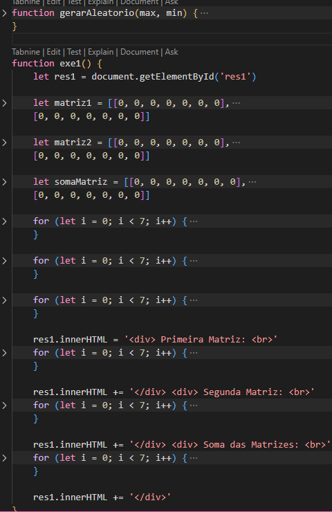
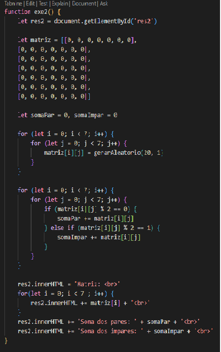
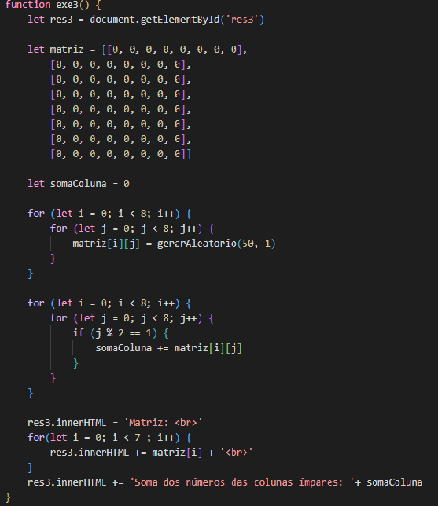
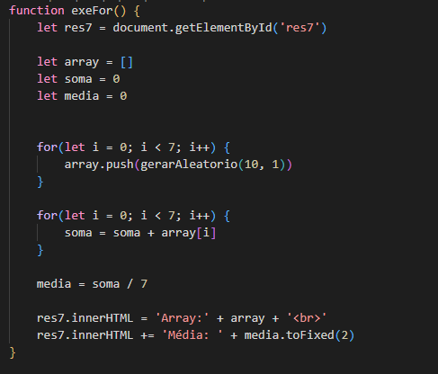
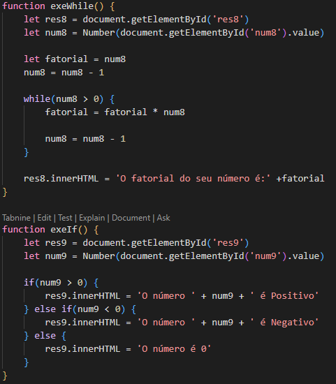
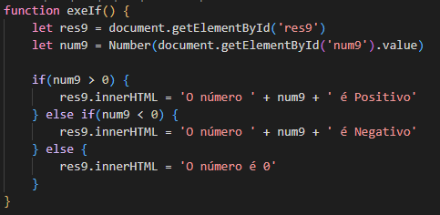

Programação
Bem-vindo ao nosso espaço dedicado à Programação! Aqui apresentamos todos os códigos dos nossos projetos. Nossos projetos são feitos de acordo com o que o cliente solicita e a baixo temos o mostruário do nosso código.
Soma de 2 Matrizes Especiais
Elabore um programa que gera duas matrizes uma matriz 7 x 7, sendo uma do tipo do tipo diagonal secundária, cujos os elementos da diagonal secundária são iguais a 5 e outra matriz diagonal principal, cujos elementos são iguais a 7. Após gerar as duas matrizes, faça a soma entre elas. Use o laço “for” para elaborar a lógica do programa.

Soma dos Números Pares e Ímpares dentro de uma Matriz
Elabore um programa que gera uma matriz 7 x 7 com números aleatórios em um intervalo de 1 à 20. Após gerar a matriz, faça a soma dos números pares e ímpares da matriz separadamente. Use o laço “for” para elaborar a lógica do programa.

Soma dos Números nas Colunas Ímpares
Elabore um programa que gera uma matriz 8 x 8 de números aleatórios em um intervalo de 1 à 50. Faça a soma dos elementos das colunas cujos os índices são ímpares. Use o laço “for” para elaborar a lógica do programa.

Ordenação de array com Bubble Sort
Algoritmo de ordenação Bubble Sort para ordenar um array de números inteiros em ordem crescente. O script exibe o array original e o array ordenado após o processo de ordenação.
Ordenação de array com Selection Sort
Algoritmo de ordenação Selection Sort para ordenar um array de números inteiros em ordem crescente. O script exibe o array original e o array ordenado após o processo de ordenação.
Ordenação de array com Insert Sort
Algoritmo de ordenação Insert Sort para ordenar um array de números inteiros em ordem crescente. O script exibe o array original e o array ordenado após o processo de ordenação.
Média de números aleatórios com Laço For
Dado um array de números aleatórios, o programa calcula a média de seus valores usando um laço for para iterar pelos elementos do array, acumulando a soma de todos os elementos.

Fatoração de números com Laço While
O Usuário insere um número aleatório, e a partir de um laço while, será calculado seu fatorial

Indentificação de Números com estrutura If-Else
O programa verifica se um número é positivo, negativo ou zero usando if-else e exibe uma mensagem correspondente.

Manipulação com o DOM (Document Object Model)
Esse programa fara com que crie uma div com ID, e dentro dela tera uma paragrafo falando alguma coisa